24h Astro
Your day's sky, at a glance. See it on Connect IQ
The ring · The centre · Settings · Watches
The ring
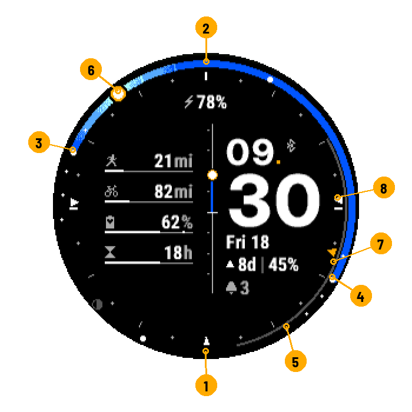
- Midnight
- Noon
- Sunrise
- Sunset
- Full night
- The sun, now
- Moon arc
- Compass: sunrise direction
One turn = 24 h. The coloured part runs from sunrise to sunset; its colour follows the sky of the moment. Large dots: sunrise, sunset, solar noon and midnight. Small dots: twilights and end of golden hour.
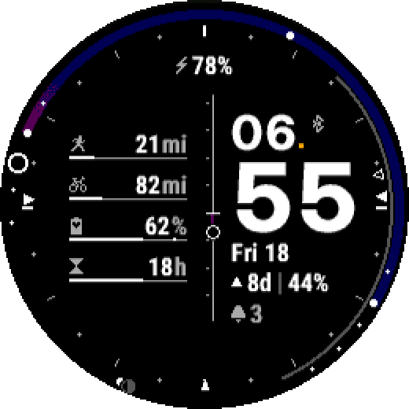

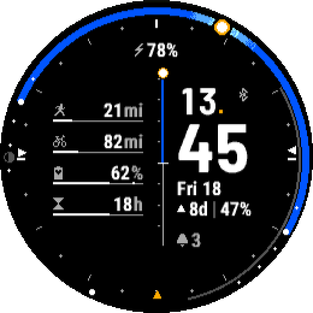

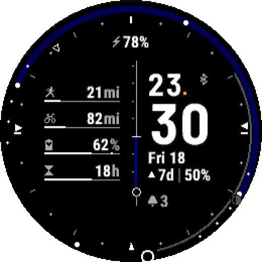
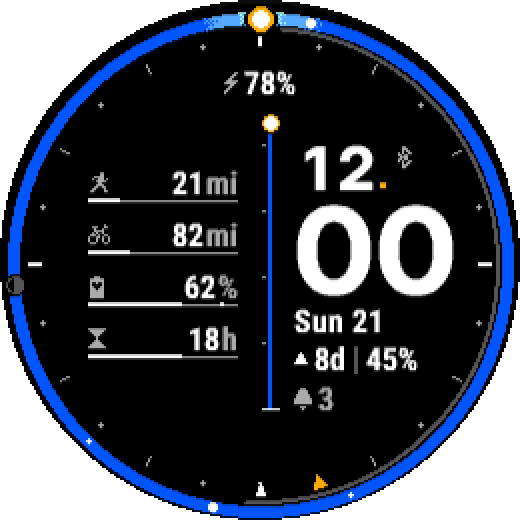
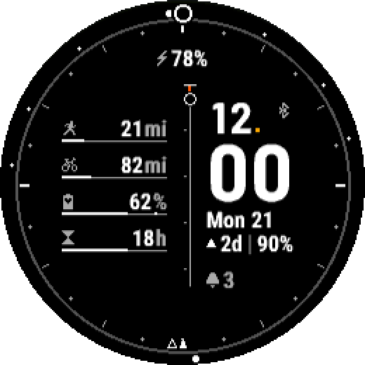
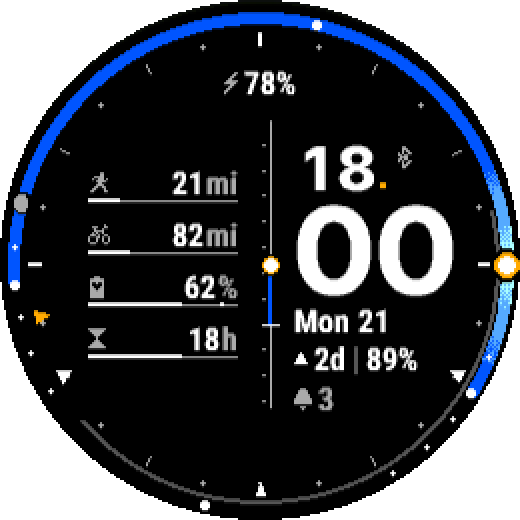
The moon
Grey arc from moonrise to moonset; disc at its phase, at the top of the ring when it is up, at the bottom otherwise.
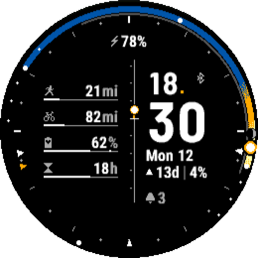
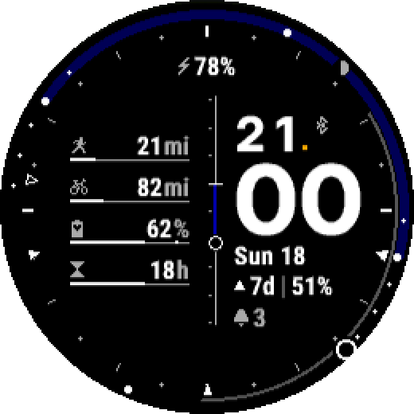
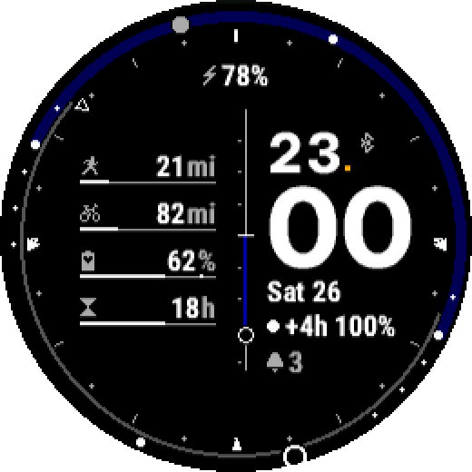
The compass
Triangles on the hour marks, like a map (north at the top): rise and set directions, where the body is now, south at the bottom.
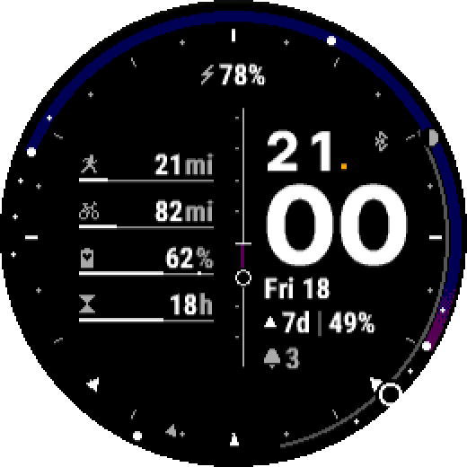
The centre
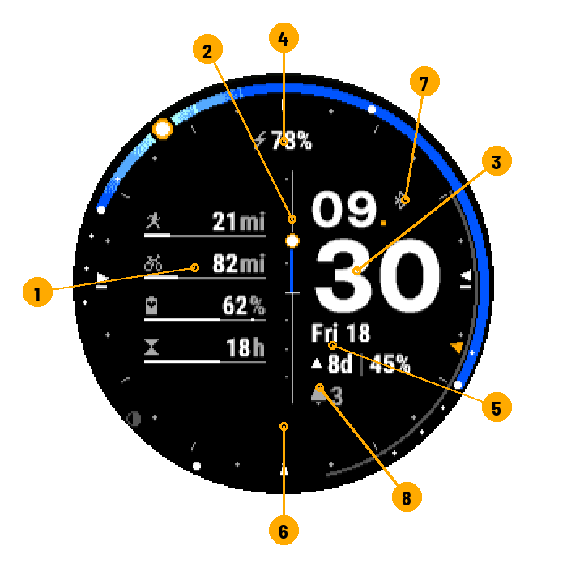
- Gauges
- Central bar
- Time
- Top field
- Lines under the minutes
- Bottom field (empty by default)
- Bluetooth, location
- Notifications
Gauges
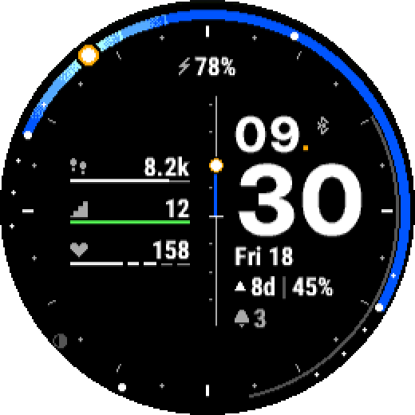
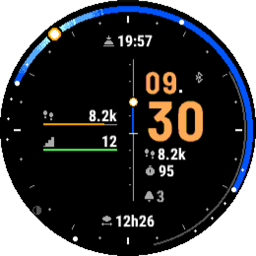
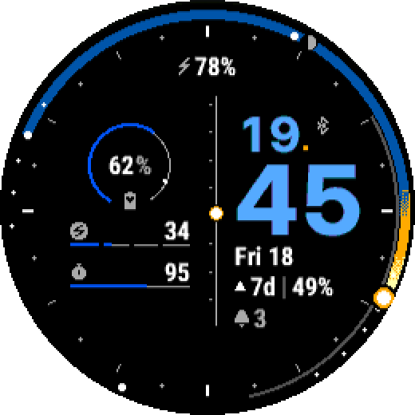
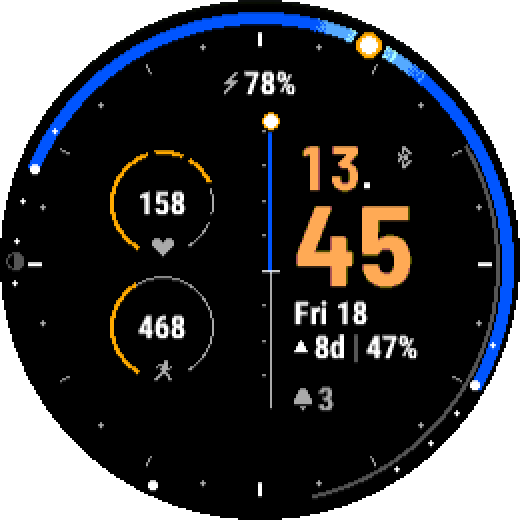
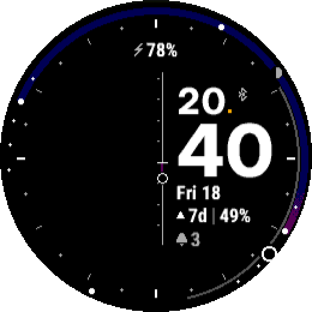
| Sport | Distance, duration or sessions; week, month or year; goal you set. | |
| Body Battery | White mark = today's highest. | |
| Recovery | Hours left; "Ok" = recovered. | |
| Steps | Towards the watch's goal. | |
| Floors | Towards the watch's goal. | |
| Intensity minutes | Week, towards the watch's goal. | |
| Heart rate | By zones; red in zone 5. | |
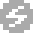 |
Stress | 0 to 100; red from 75. |
Green: goal reached. Red: alert. Grey track only or "--": data unavailable (depends on the model).
Central bar
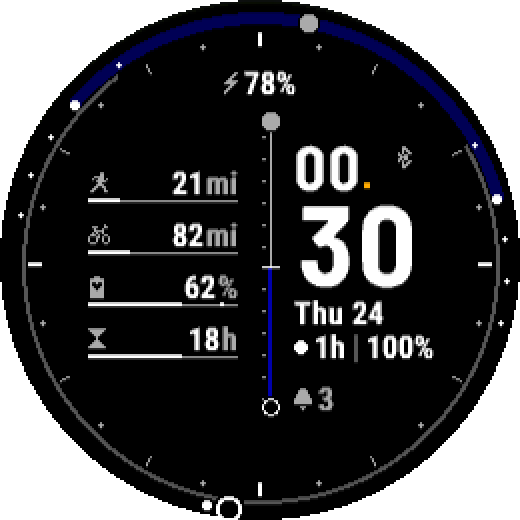
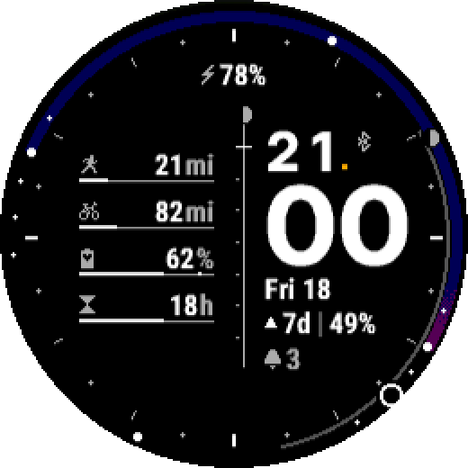
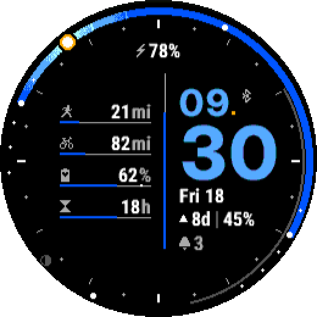
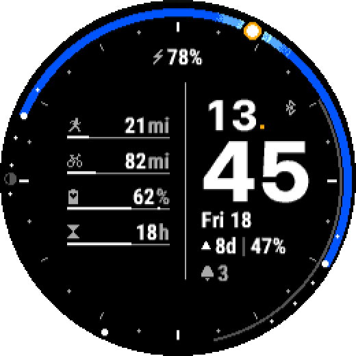
White line: the horizon.
Fields
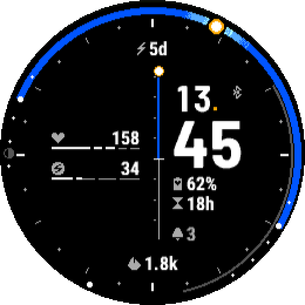
Moon line: ▲ 8d │ 47% = full moon in 8 days, 47% lit; ▼ towards new moon; ● / ○ full / new moon close; +4h = passed 4 h ago.
Status bar
phone connected (dark grey: not connected) ·
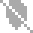
no location: computed for Paris · charging · notificationsThemes and sky
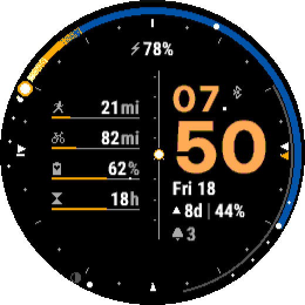
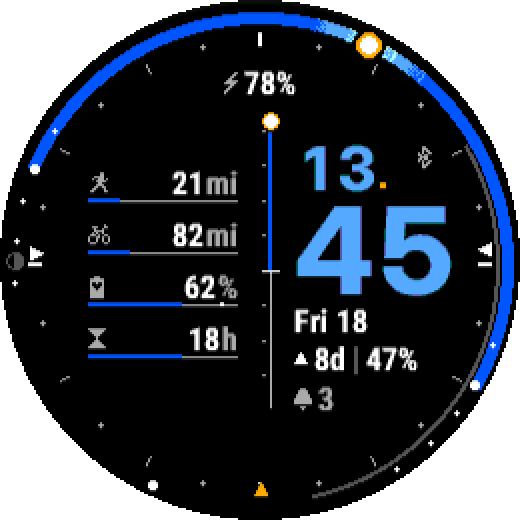
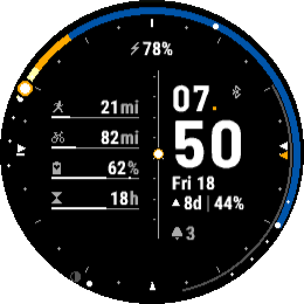
Settings
In the Connect IQ or Garmin Connect app on your phone.
Main page
| Setting | Choices | Default |
|---|---|---|
| Left column layout | 4 bars, 3 bars, 1 ring + 2 bars, 2 bars, 2 rings, None | 4 bars |
| Central separator | Sun elevation, Sun and moon elevation, Moon elevation, Battery, Plain bar | Sun elevation |
| Theme | Classic, Sun, Azure | Classic |
| Sky gradients | Dithered, Flat steps | Dithered |
| Moon on the 24h dial (arc and disc) | Yes / No | Yes |
| Compass on the hour marks (azimuths) | None, Sun, Moon | Sun |
| Manual position (instead of GPS) | Yes / No | No |
Gauges 1 to 4
Sport, measure, period and goal apply only to the Sport data. Only the gauges used by the layout are shown.
| Setting | Choices | Default (1 / 2 / 3 / 4) |
|---|---|---|
| Data | Sport, Recovery, Body Battery, Steps, Intensity minutes, Floors, Heart rate, Stress | Sport / Sport / Body Battery / Recovery |
| Sport | All sports, Running, Cycling, Walking, Hiking, Swimming, E-bike, Cross-country ski, Rowing, Inline skating, Paddleboarding, Kayaking, Snowshoeing | Running / Cycling / All sports / All sports |
| Measure | Distance, Duration, Sessions | Distance / Distance / Distance / Distance |
| Period | Week, Month, Year | Month / Month / Month / Month |
| Goal | 0 – 100000 | 100 / 300 / 0 / 0 |
Coordinates
Used only when manual position is on.
| Setting | Choices | Default |
|---|---|---|
| Latitude | -90 – 90 | 48.8567 |
| Longitude | -180 – 180 | 2.3508 |
Text fields
Content of the four fields around the time.
| Setting | Choices | Default |
|---|---|---|
| Top field / Bottom field / Line 1 (under minutes) / Line 2 | Empty, Battery (%), Battery (days), Date, Moon, Next sunrise / sunset, Day length, Steps, Floors, Intensity minutes, Calories, Heart rate, Body Battery, Stress, Recovery, Notifications | Battery (%) / Empty / Date / Moon |
Status bar and battery
| Setting | Choices | Default |
|---|---|---|
| Bluetooth status | Yes / No | Yes |
| Notification count | Yes / No | Yes |
| Low battery threshold (%) | 1 – 99 | 20 |
Advanced
| Setting | Choices | Default |
|---|---|---|
| Recovery gauge scale (hours) | 6 – 168 | 48 |
Watches
Enduro™ 3 · fēnix® 6 / 6 Solar / 6 Dual Power · fēnix® 6 Pro / 6 Sapphire / 6 Pro Solar / 6 Pro Dual Power / quatix® 6 · fēnix® 6X Pro / 6X Sapphire / 6X Pro Solar / tactix® Delta Sapphire / Delta Solar / Delta Solar - Ballistics Edition / quatix® 6X / 6X Solar / 6X Dual Power · fēnix® 7 / quatix® 7 · fēnix® 7 Pro · fēnix® 7 Pro - Solar Edition (no Wi-Fi) · fēnix® 7S · fēnix® 7S Pro · fēnix® 7X / tactix® 7 / quatix® 7X Solar / Enduro™ 2 · fēnix® 7X Pro · fēnix® 7X Pro - Solar Edition (no Wi-Fi) · fēnix® 8 Solar 47mm · fēnix® 8 Solar 51mm / tactix® 8 Solar 51mm · fēnix® 9 Pro Solar 47mm · fēnix® 9 Pro Solar 51mm · Forerunner® 255 · Forerunner® 255 Music · Forerunner® 255s · Forerunner® 255s Music · Forerunner® 955 / Solar
For the curious: the sky, explained.